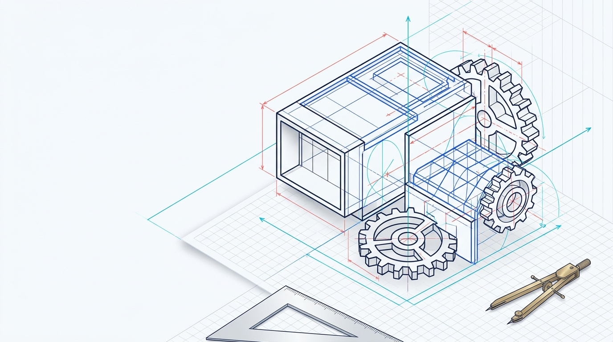
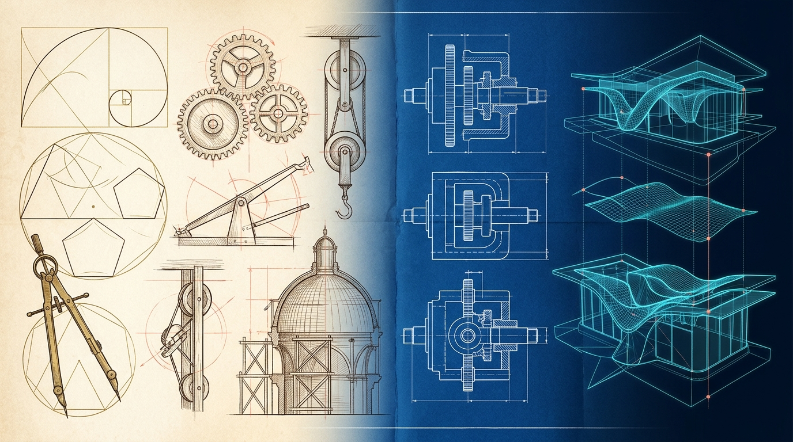
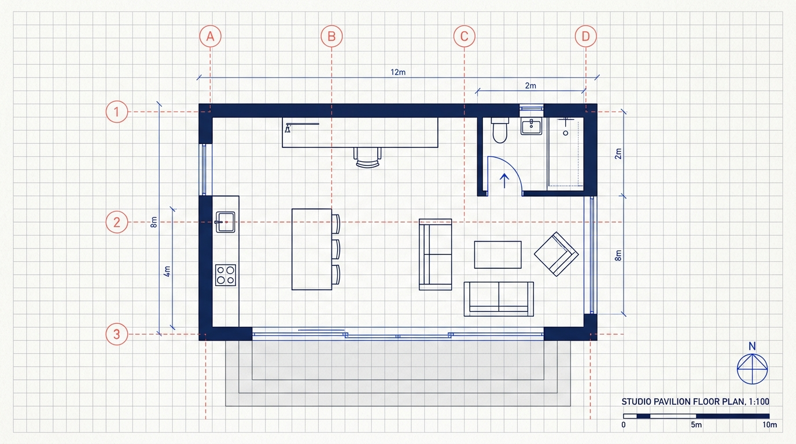

Precisión Geométrica
Cada línea, arco y cota define dimensiones exactas y tolerancias verificables, eliminando toda ambigüedad entre el diseño y la fabricación.
Del trazo con escuadra sobre papel milimetrado al modelado paramétrico 3D: explora la historia, los planos normalizados y las aplicaciones reales que dan forma a la arquitectura y la industria moderna.

Cada línea, arco y cota define dimensiones exactas y tolerancias verificables, eliminando toda ambigüedad entre el diseño y la fabricación.
Convenciones universales de grosores de línea, formatos de papel, escalas y simbología que permiten leer un plano en cualquier país del mundo.
Capacidad de proyectar volúmenes tridimensionales sobre un soporte plano mediante vistas diédricas, cortes y perspectivas axonométricas.
Cada bloque temático cuenta con su propia página especializada, ilustraciones técnicas generadas, diagramas interactivos y fichas normativas.

MÓDULO 02Línea de tiempo interactiva desde la geometría euclidiana y Leonardo da Vinci hasta Gaspard Monge y la era BIM.
ABRIR PÁGINA DE HISTORIA →
MÓDULO 03Archivo filtrable con láminas ilustradas, vistas ortogonales, cortes a 45°, isometrías, alfabeto de líneas y visor Lightbox.
ABRIR GALERÍA DE PLANOS → MÓDULO 04
MÓDULO 04
Descubre cómo se aplica el dibujo técnico en Arquitectura, Mecánica, Ingeniería Civil, Electrónica y Diseño de Producto.
ABRIR PÁGINA DE APLICACIONES →